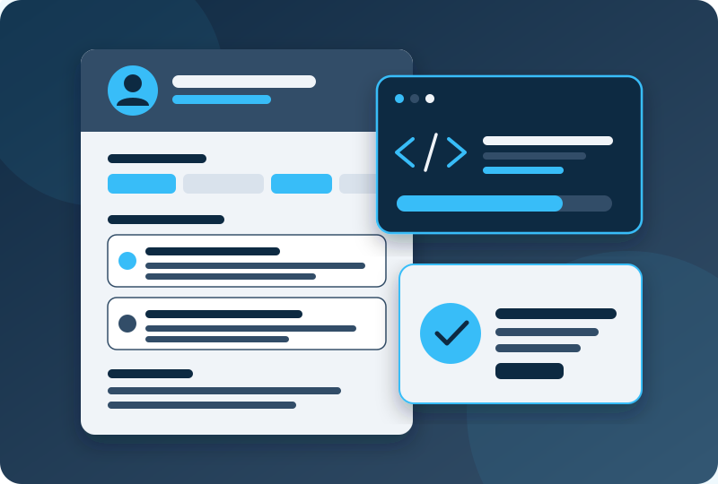

1. Contact details
Name, mobile, a professional email address and a link to your LinkedIn or GitHub profile if it is tidy. Skip date of birth and photos unless the employer asks for them.
Subtopic 2
How to present your projects, skills and potential clearly in a CV and cover letter.
An employer often spends under a minute on a first look at a CV. As a student you may have little paid experience, but you have projects, labs and coursework. Your job is to make that evidence easy to find.

Name, mobile, a professional email address and a link to your LinkedIn or GitHub profile if it is tidy. Skip date of birth and photos unless the employer asks for them.
Two or three lines: what you are studying, the area you are aiming for, and one strength. Change it for each role.
Programme, institution and expected graduation date. List modules that match the job, such as networking, security or web development.
Your strongest section as a student. Pick two to four pieces of work and describe what you did and what came out of it.
Group them (for example networking, security tools, programming, operating systems). Only list what you could talk about in an interview.
Completed courses, certificates, competitions, clubs and volunteering. Show the status honestly, for example "in progress, exam planned".
A project description is stronger when it says what you did, which tools you used and what the outcome was. A useful pattern for each bullet point is:
Action verb + what you did + tool or method + result
For example: "Configured a small office network with VLANs and firewall rules in Cisco Packet Tracer, separating staff and guest traffic." Include a link to a report, repository or demo when you can. Never claim work that your group did without you. Be clear about your own part.
A cover letter is a short, focused note, normally under one page. It explains why this role and this employer, which is something a CV cannot do.
| Weak | Stronger |
|---|---|
| "Worked on a networking project." | "Designed and tested a three-router network in Packet Tracer using static and dynamic routing." |
| "Good at cybersecurity." | "Used Wireshark to capture and analyse traffic in a lab, identifying unencrypted login credentials." |
| "Knowledge of Python." | "Wrote a Python script that checks a list of log files for repeated failed logins and prints a summary." |
| "Team player." | "Led the documentation for a four-person web project and kept the team's task list up to date." |
Tick each item that is true for your CV. Nothing is saved or sent.
0 of 8 complete.
About this content: this page gives general good-practice advice written by the project team. It contains no external statistics. Employer requirements differ, so check each job advert and ask the Bahrain Polytechnic careers or placement staff for local advice.